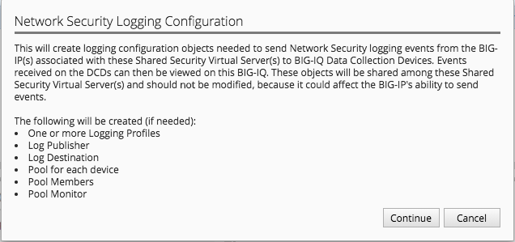
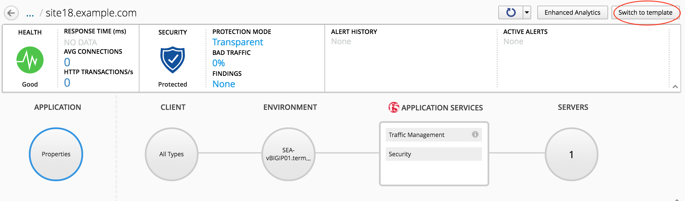
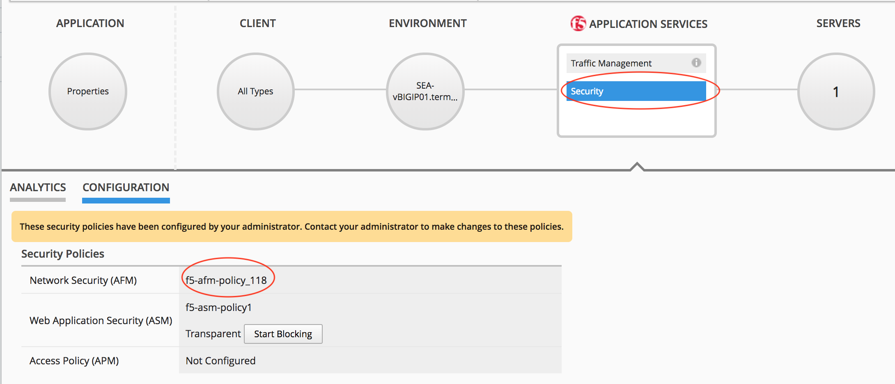
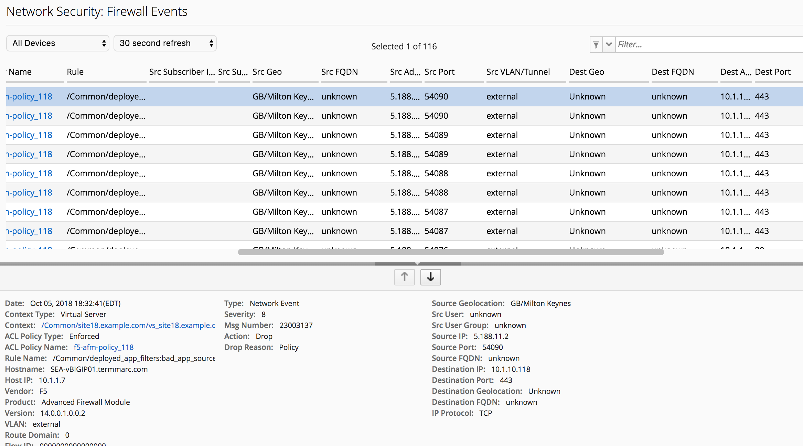

F5 BIG-IQ & Cloud Edition Lab > Class 7: BIG-IQ Application Firewall Manager (AFM) > Module 2: Network Tools and Logs Source | Edit on
Lab 2.1: Using BIG-IQ AFM Logging to View Centralized Firewall logs¶
Note
This lab uses firewall objects created on Class 7 Module 1, and also uses previously created application deployments (site36.example.com). Please verify the application site36.example.com is a currently deployed application in your environment, and complete the steps in Module 1 before proceeding with steps below
Lab 2.1.1: Configure and Use BIG-IQ Logging for AFM¶
As of BIG-IQ 6.0, BIG-IQ supports remote log collecting and viewing for AFM policies. The below steps will take you through the configuration required to support this feature:
Under Configuration > Security > Network Security, click Contexts
In the search bar in the upper right corner, search for
site36Click the checkbox next to the lock symbol to select both the http and https virtual servers returned from search.
The Configure Logging button should now be available to click, click it.
Unlike ASM logging configurations, Network Firewall logging configurations reference a number of system objects including: log publishers, destination, high speed log pools, and associated pool objects. In order to create a logging profile to logs firewall events, these objects must already exist on the system. By clicking Configure Logging BIG-IQ will create, if necessary, all the dependent objects and then create the logging profile that creates the objects. BIG-IQ will display the dialog below, which outlines the objects that are being created:
{kind=link}
Under Configuration > Security > Network Security > Shared Security, click Logging Profiles
Click the
afm-remote-logging-profilecreated by BIG-IQ in previous step, the Network Firewall tab on leftExamine the options set by BIG-IQ when creating the logging profile.
Note
per https://support.f5.com/kb/en-us/products/big-iq-centralized-mgmt/manuals/product/big-iq-centralized-management-security-6-0-1/23.html#guid-525b3d56-f673-4569-85a5-0b979cb2cb35, none of the objects created in this manner should be modified. Need to confirm whether this is the case. Certainly seems reasonable that a customer would want to tweak these settings to meet their requirements.
Click Cancel
At this point, we have created all the objects necessary for logging firewall events. However, we do need to verify that the Data Collection Devices (DCD) being used for this lab have the Network Security Service enabled. To do this, follow the following steps:
We are currently logged in as Larry, the security manager, we need to log out of this role. Then log in as the admin user.
Under System > BIG-IQ Data Collection, click BIG-IQ Data Collection Devices
Click on the device
bigiq1dcd.example.com, and click Services on left side.Scroll down to Network Security and verify that service status is Active. If not, activate.
Log out of system as Admin, and log back in as Larry.
Lab 2.1.2: Create new Application Template Using Firewall objects¶
In the steps below, we are going to attach our newly created firewall policies to application templates.
Under Configuration > Security > Network Security, click Firewall Policies
Click the checkbox next to
f5-afm-policy_136Click the dropdown box on the More button and select make available for templates - the firewall policy is now available for use with application templates on BIG-IQ
Click Configuration > Security > Shared Security, click Logging Profiles
Click the checkbox next to
afm-remote-logging-profileClick the button Make available for templates - the afm-remote-logging-profile is the logging profile BIG-IQ created for us when we configured logging in the previous exercise.
With the objects we created available for use with templates, we will now create a new template to use which references these objects.
For the steps below, we will use the david (or marco) account to manipulate application templates
Under Applications > Service Catalog
Check the box next to the
Default-f5-HTTPS-WAF-lb-template, click the dropdown box on the More button and select CloneName the cloned policy
Default-f5-HTTPS-WAF-FW-lb-templateOnce editing the new template, select the Security Policies button
In the Network Security section, set the Enforced Firewall Policy to
f5-afm-policy_136for both virtual servers.In the Shared Security section, set the Logging Profiles to
afm-remote-logging-profilefor both virtual servers on the Standalone Device.Click Save & Close
From the Service Catalog screen, select the template you just created
Default-f5-HTTPS-WAF-FW-lb-template, the click the Publish button.
At this point, we have created a new application template that is using our newly created firewall policy and logging profiles. Next, we will associate an existing application with our new template.
Lab 2.1.3: Update Existing Application To Use New Application Template:¶
In previous labs, we have created and deployed a new application using a fresh template. In this exercise, we are going to update an existing application to use a new template.
Complete the steps below logged in as david (or marco)
Click the Applications tab, and click the Applications button.
Click the application
site36.example.comIn the upper right hand corner, click Switch to Template button
Select the
Default-f5-HTTPS-WAF-FW-lb-templatewe just created.In the template editor, in the Domain Names field, type site36.example.com
Click Save & Close - This will take a few moments, but the existing application is being re-configured with our updated template, which references our new firewall policy.
Once the application finishes deploying, click on the application
site36.example.comClick the Security label under Application Services
Verify that the Network Firewall policy listed in the Security Configuration summary pane lists
f5-afm-policy_136as the firewall policy.
{kind=link}
{kind=link}
Lab 2.1.4: Monitoring Firewall Logging On BIG-IQ:¶
In this exercise, we will generate some traffic to be processes by the firewall policy, and use BIG-IQ monitoring to examine the results.
Complete the steps below logged in as Larry
Under Monitoring > Events > Network Security, click Firewall
View the current Firewall Event log, in filter box, enter
site36to filter the log for our test application - At this point, you probably will not have any events in the log.From the
Ubuntu 18.04 Lamp Serveropen an SSH session.From the SSH session, run the following command:
sudo nmap -sS 10.1.10.136 -D 10.1.10.7,10.1.10.8,10.1.10.9,5.188.11.1,5.188.11.2This will use the nmap program to scan our test application using several different source addresses. Our firewall policy will not allow all of the sources.
Refresh the Firewall Event Log. This time you should see a number of events in the firewall log.
Click one of the events, and examine the details available

{kind=link}
Why is the Firewall Event log not showing accepted connections, only drops?
Hint
check the remote-afm-logging-profile